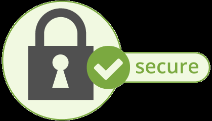

Os Problemas
Abaixo os principais problemas encontrados nesse tipo de diversão
O vício em jogos
As pessoas jogam por várias razões, como gosto por apostas e emoções intensas, tentativa de afastar o tédio, necessidade de afastar emoções negativas, como o desânimo, e para resolver problemas financeiros.
O vício em games é um tipo de vício comportamental em que a pessoa deixa de fazer suas atividades diárias para ficar jogando, o que compromete atividades básicas do cotidiano, como higiene pessoal, alimentação, trabalho e/ou estudos, vida social e etc.
Em janeiro de 2018 foi anunciado que o transtorno ludopatia (vício em jogos) seria incorporado como doença pelo 11º Catálogo Internacional de Doenças (CID-11).
O vício em jogos eletrônicos é um problema sério. Tão sério como o vício em drogas e álcool, já que o cérebro sofre alterações decorrentes da dependência, e a pessoa se transforma completamente
O vício em jogos de azar online
As pessoas podem desenvolver vícios em qualquer coisa que cause uma sensação de bem-estar e as pessoas podem desenvolver vícios em qualquer coisa que cause uma sensação de bem-estar e satisfaça a sua necessidade por recompensas.
Os jogos de azar são viciantes justamente porque despertam prazer, adrenalina e, quando se ganha, alívio e sensação de vitória.
Por outro lado, quando se perde, o indivíduo fica tentado a jogar mais algumas rodadas para mudar a sua sorte.
Os jogos de azar ativam diversas partes do cérebro, como o córtex pré-frontal ventromedial, associado à tomada de decisão e memória, e o córtex frontal orbital, o qual ajuda no controle emocional.
O jogo de azar é um grande problema. De acordo com a estimativa mais recente da Organização Mundial da Saúde (OMS), em 2016 a perda global anual dos apostadores foi estimada em US$400 bilhões.
As consequências do Vício
Entre os problemas físicos que podem ser causados pela prática descompensada dos jogos eletrônicos estão a falta de concentração, obesidade, síndrome do olho seco, problemas de audição e postura inadequada.
A dependência em jogos funciona como todo e qualquer vício, a dinâmica é a mesma. O tratamento indicado seria a psicoterapia e/ou psicofármaco (uso de medicamentos) se necessário. É importante que a pessoa procure fazer uma avaliação com um psicólogo ou psiquiatra para combinar o tratamento.
O extremismos
A exposição a ideologias supremacistas brancas em jogos online dobrou em 2022, segundo um novo estudo da norte-americana Liga Anti-Difamação (ADL). Além disso, três quartos de todos os jogadores adultos dos EUA sofreram assédio grave no jogo – o termo refere-se a assédio prolongado, doxxing, ameaças físicas e assédio sexual, observa a ADL.
Segundo o estudo, baseado em uma pesquisa feita com 2.134 pessoas que jogam online na modalidade multiplayer, 20% dos adultos relataram exposição a ideologias de supremacia branca em 2022 – um aumento significativo em relação aos 8% que relataram ter visto esse tipo de conteúdo em 2021.
A ADL diz que 15% das crianças de 10 a 17 anos relataram ter ouvido discussões sobre supremacia branca em jogos online. Esse tipo de linguagem foi encontrada com mais frequência nos jogos Call of Duty, Fortnite, Grand Theft Auto, PUBG: Battlegrounds, Valorante e World of Warcraft.
Na pesquisa da ADL, 20% dos adultos relataram exposição a ideologias de supremacia branca em 2022, contra 8%v em 2021.
“Os supremacistas brancos e extremistas estão divulgando suas ideias por toda a sociedade, incluindo os jogos online”, afirmou o CEO da ADL, Jonathan Greenblatt. “O que começa na internet nem sempre termina online, mas pode ter consequências fatais em nossas comunidades.”
Pesquisas anteriores sugerem que as comunidades de jogos online desencadeiam tanto comportamentos positivos quanto negativos. Jogadores de todas as idades se unem a comunidades online em busca da sensação de pertencimento a algum grupo.
Mas, como escreveu Rachel Kowert em um relatório recente sobre extremismo e tecnologia, quando os jogadores mesclam suas identidades da vida real e do jogo, tendem a exibir (para outros jogadores) uma “vontade de lutar / morrer, comportamentos agressivos, maquiavelismo – traço de personalidade caracterizado pela manipulação, por ser enganoso, cínico e sem moralidade –, narcisismo, psicopatia (falta de empatia), sexismo, racismo e endosso de crenças e políticas centradas em ideias de nacionalismo branco”.
A responsabilidades dos fabricantes
A ADL diz que as empresas de jogos não estão fazendo o suficiente para controlar o assédio e o extremismo no mundo online.
“Acho que existe apenas uma empresa de jogos que tem uma política contra o extremismo, a Roblox”, diz Daniel Kelley, que dirigiu o estudo para a ADL. “Este é o quarto ano que realizamos esse estudo, mas não estamos vendo o tipo de ação que precisamos da indústria de jogos contra o extremismo.”
A ADL diz que as empresas de jogos não estão fazendo o suficiente para controlar o assédio e o extremismo.
Kelley diz que as plataformas de mídia social estão longe de serem perfeitas no controle do discurso extremista e de ódio, mas que, pelo menos, investiram seriamente em recursos – tanto humanos quanto de inteligência artificial – necessários para combater o problema.
“Quando as empresas de mídia social começaram a se tornar mais responsáveis e transparentes sobre essa questão, passaram a divulgar relatórios de transparência que incluíam descrições mais detalhadas do discurso extremista e de como ele se manifesta”, lembra o pesquisador.
Mas as empresas de jogos não seguem esse mesmo padrão. “Houve audiências no Congresso [dos EUA] sobre discurso extremista nas redes sociais, mas a indústria de jogos ainda não recebeu a mesma atenção do governo”, diz Kelley.
As grandes plataformas de jogos têm grupos de moderação de conteúdo que geralmente são compostos por pessoas talentosas e bem-intencionadas. Mas, como ficou claro publicamente no Twitter, esses grupos não costumam ter recursos ou poder político interno para moderar melhor o conteúdo nocivo.
“É urgente aumentar o investimento das empresas de jogos nesse tipo de trabalho”, defende Kelley. “É preciso haver uma mudança real nas prioridades.”
A clonagem de dados
Clonagem de dados refere-se a uma prática criminosa em que informações pessoais, financeiras ou confidenciais de indivíduos ou organizações são copiadas ou duplicadas sem autorização. Os criminosos utilizam essas informações para cometer fraudes, roubo de identidade e outras atividades ilícitas.
Existem diferentes tipos de golpes de clonagem de dados que podem afetar os indivíduos e as empresas. Alguns exemplos comuns incluem:
Phishing: Os golpistas enviam e-mails falsos que se parecem com comunicações legítimas de bancos, empresas ou serviços online. Esses e-mails solicitam que a vítima forneça informações confidenciais, como senhas, números de conta bancária, números de cartão de crédito, etc. Essas informações são então usadas para clonar a identidade da vítima.
Skimming: Dispositivos de skimming são instalados em caixas eletrônicos, terminais de pagamento ou outros dispositivos de processamento de cartões para copiar as informações do cartão de crédito ou débito dos usuários. Esses dispositivos podem ser colocados de forma discreta, tornando difícil para os usuários identificarem que suas informações foram clonadas.
Malware: Malwares, como trojans e keyloggers, podem ser usados para infectar computadores ou dispositivos móveis e capturar informações confidenciais digitadas pelos usuários. Essas informações são então enviadas aos criminosos, permitindo-lhes clonar dados e acessar contas pessoais.
Roubo físico de dados: Os criminosos podem roubar documentos físicos, como extratos bancários, registros médicos ou informações financeiras, para clonar as informações contidas neles. Isso pode ocorrer por meio de furtos em residências, empresas ou roubo de correspondências.
Redes Wi-Fi inseguras: Em redes Wi-Fi não seguras, os golpistas podem interceptar o tráfego de dados e capturar informações confidenciais transmitidas por dispositivos conectados à rede, como senhas, informações bancárias ou números de cartão de crédito.
As Taxas ocultas
Alguns jogos on-line usam o modelo "freemium"; ou seja, eles disponibilizam um conteúdo gratuito para você, exigindo pagamento para acessar outras partes do jogo. Conforme observado pelo Mashable, por exemplo, usuários do Windows 10 precisam pagar para jogar certos modos dos jogos clássicos sem ser interrompidos por anúncios. Ou um jogador pode usar dinheiro de verdade para comprar uma espada virtual ou uma parte da armadura, ou abusar do cartão de crédito para turbinar o jogo o seus personagens.
Na maioria dos casos, esses jogos exigem que se registre um cartão de crédito para começar a jogar, com cobrança automática caso o usuário decida comprar novos itens ou serviços. Nunca informe o número do seu cartão para jogos freemium. Mesmo em jogos mais tradicionais, baseados em com assinatura, verifique sempre suas faturas do cartão de crédito em busca de cobranças indevidas de compras que você não autorizou. Se você permitir que seus filhos usem seu smartphone ou tablet, pense seriamente em desativar todas as "atualizações do aplicativo" para evitar que eles gastem demais no cartão com compras no aplicativo sem nem perceber.
Os Chats
Alguns jogos permitem conversar e jogar com qualquer pessoa no mundo. Isso significa que podemos nos deparar com linguagem ofensiva e intimidações. Em casos extremos, o bullying pode ser usado como uma tática para vencer os jogos. Outro problema é a compra de elementos extras que alguns jogos oferecem, isso pode levar a um endividamento e/ou compras indevidas de crianças, já que, algumas pessoas deixam seus dados bancários e cartões salvos nas lojas de aplicativos.
O bullying virtual
Para muitas crianças, a possibilidade de se refugiar no mundo on-line é um alívio, pois ninguém sabe quem elas são, em que escola estudam ou como é sua aparência. Porém, esse anonimato é uma faca de dois gumes. Conforme observado pelo Get Safe Online, alguns jogadores aproveitam essa mudança de identidade para "frustrar" outros jogadores, deliberadamente tornando o jogo menos interessante. Isso pode incluir "roubo de mortes", quando os chamados "griefers" matam os monstros procurados antes dos jogadores chegarem até eles ou "montam" grupos com monstros avançados para enfrentar jogadores mais básicos, que acabam morrendo.
Em alguns casos, essa frustração se transforma em cyberbullying, ou bullying virtual. Há diversas formas comuns, como "criar boatos" sobre os jogadores com mensagens ofensivas, ou encher canais globais de bate-papo com spams contendo comentários difamatórios sobre suas vítimas. Segundo o Stay Safe Online, é importante que filhos e pais entendam suas opções. Muitos jogos permitem que os jogadores "bloqueiem" o bate-papo e mensagens de outros usuários e, em alguns casos, as palavras e ações do agressor podem ser uma violação dos termos de serviço do jogo. É sempre bom anotar ou capturar a tela de qualquer conversa ofensiva e denunciá-la aos administradores do jogo.
Os problemas de privacidade
O Stay Safe Online recomenda que as crianças nunca criem nomes de usuário derivados de seus nomes verdadeiros ou que indiquem sua localização ou idade. Segundo a US-CERT, a natureza social dos jogos on-line permite que os criminosos virtuais manipulem as conversas. Eles podem selecionar seu filho em um canal de bate-papo geral e começar a enviar mensagens pessoais pedindo informações pessoais detalhadas. Ao juntar os dados de jogos e de outras fontes, os hackers conseguem abrir contas no nome da criança ou ter acesso a contas existentes. Nunca transmita qualquer tipo de informação pessoal e verifique se os nomes de usuário e as senhas são diferentes nos vários jogos e sites de jogos.
As preocupações com a webcam
Conforme observado pela Business Insider, mais de 4.500 webcams dos EUA foram invadidas no ano passado e transmitidas para um site russo. Qualquer dispositivo conectado, como uma webcam ou um dispositivo de áudio, pode ser controlado por invasores e usado para explorar as crianças. Para atenuar esse risco, sempre verifique se há malware em seu sistema e se a configuração padrão da webcam é "desligada".
Os predadores on-line
Normalmente, os predadores on-line são jogadores mais velhos que usam videogames para atrair e envolver vítimas mais jovens. O resultado final pode ser mensagens impróprias, conversas pela webcam ou até encontros presenciais, que podem acabar em exploração sexual. Segundo o Internet Safety 101, os jogos on-line dão aos predadores uma oportunidade de construir um tipo de experiência compartilhada on-line, tornando-se defensores ou colegas da criança. Depois de vencer um adversário difícil ou explorar uma nova área no jogo, os predadores criam um laço com os jogadores mais jovens e desenvolvem uma série de experiências comuns que levam a perguntas mais pessoais. Em muitos casos, os predadores tentam colocar as crianças contra os pais, mostrando que eles são "os únicos que realmente as compreendem". Para combater esse problema, converse com seus filhos sobre os riscos on-line e monitore suas atividades nos jogos de perto.
As mods
São basicamente alterações não oficiais feitas nos códigos de um determinado game. Dependendo dos mods o site escolhido pode conter vírus, os cibercriminosos procuram uma maneira de obter dinheiro comercializando essas informações roubadas ou utilizando-as em outros ataques, um dos principais meios de utilização dos criminosos são esses sites, os atacantes usam diferentes técnicas para obter acesso aos sistemas das pessoas, como os Cheats.
As cheats
Os cheats, que são modificações feitas no código de um jogo para permitir a ativação de funcionalidades que dão vantagens aos jogadores, como ver através das paredes ou mirar automaticamente, representam uma indústria muito lucrativa, mas também prejudicial e cara para as empresas.

As Dicas de segurança
Para se proteger contra golpes de clonagem de dados, é importante tomar algumas precauções:
Esteja atento a e-mails suspeitos e evite clicar em links ou fornecer informações pessoais em resposta a e-mails não solicitados.
Verifique regularmente seus extratos bancários, faturas de cartão de crédito e outras transações financeiras para identificar qualquer atividade suspeita.
Utilize software antivírus e mantenha-o atualizado para proteger seus dispositivos contra malwares.
Evite usar redes Wi-Fi públicas ou inseguras para acessar informações confidenciais, a menos que você esteja usando uma conexão segura, como uma VPN.
Proteja seus documentos físicos importantes em local seguro e destrua adequadamente aqueles que você não precisa mais.
Mantenha-se informado sobre os últimos golpes e técnicas de clonagem de dados para estar ciente das ameaças existentes.
Sempre acesse sites de confiança
É comum, principalmente quando se recorre a buscadores, ser encaminhado para sites desconhecidos de compras, para assistir a vídeos, ou outras ações. Alguns usuários possuem malícia o suficiente para conseguir operar em tais sites sem adquirir vírus, mas, para leigos, evitar tais páginas é essencial.
Não acesse links desconhecidos
Em e-mails, sites, programas de conversa, ou praticamente tudo o que se tem acesso na internet pode, vez ou outra, estar com algum link de caráter malicioso. Atenção, cuidado e precaução em qualquer situação é essencial para proteção de seus dados e sistema operacional.
Cuidado com downloads
Downloads são um dos grandes motivos de entrada de vírus nas máquinas. Fique muito atento aos botões de download; alguns sites podem dar a entender que o download será feito por um link que, na verdade, acarretará em vírus.
Atenção na instalação de programas
Preste atenção a todos os softwares adicionais que o programa indica durante a instalação. Evite aceitar tudo durante o processo, pois muitos softwares indicam instalação de outras coisas adicionais que, mesmo que não tenham códigos maliciosos, podem deixar seu computador mais lento e vulnerável.
Atente-se a arquivos que você baixa e abre
Embora seja importante instalar um bloqueador de spam e filtro de e-mail, você ainda precisa ter muita cautela quando faz um download. Se o e-mail que você recebeu parecer estranho ou suspeito, apague-o imediatamente, sem ao menos abri-lo.
Suspeite de presentes online
Entregas grátis de produtos caros – como tablets e smartphones – na Internet, especialmente em sites que pedem que sejam preenchidos dados pessoais, costumam ser golpes para que os desavisados entreguem informações que podem ser usadas em roubo de identidade.
Não armazene senhas no seu navegador
Tome cuidado para não deixar suas senhas armazenadas em um navegador – isso é ainda mais perigoso caso se trate de uma máquina pública ou compartilhada. Também evite deixar sua conta logada em redes sociais ou contas de e-mail. É recomendável limpar o histórico do navegador e usar um gerenciador de senhas sempre que terminar uma navegação.